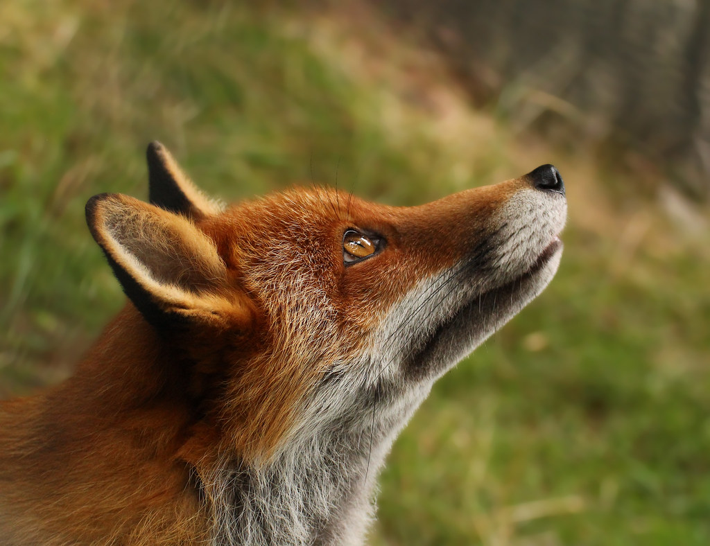
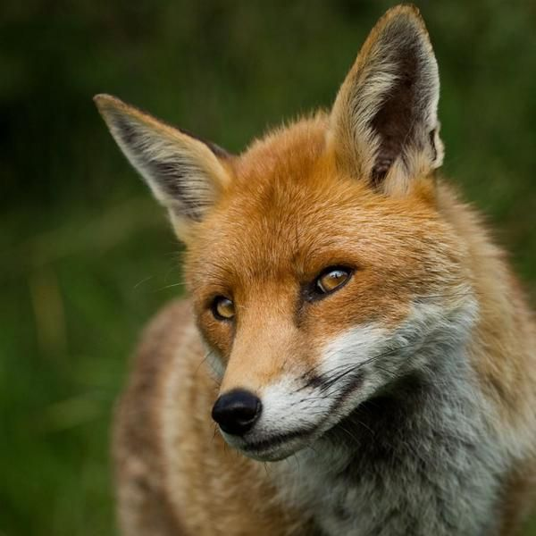

Bienvenidos al fascinante mundo del zorro rojo (Vulpes vulpes), una criatura de belleza cautivadora y agilidad sin igual. Con su pelaje de tonos ardientes y ojos que reflejan la astucia de su espíritu, el zorro rojo es un espectáculo digno de admiración en cualquier hábitat que habite.
Un Icono de Inteligencia: Reconocido por su ingenio y habilidad para navegar por los desafíos de la naturaleza, el zorro rojo ha sido durante mucho tiempo un símbolo de la astucia animal. Su capacidad para adaptarse y prosperar en diversos entornos es un testimonio de su inteligencia y resiliencia.
Pelaje
Un manto rojizo que se mezcla con el entorno, perfecto para el sigilo y la supervivencia.
Cola
Larga y esponjosa, con una punta blanca distintiva, esencial para el equilibrio y la comunicación.
Sentidos Afilados
Oídos puntiagudos y nariz sensible, herramientas clave para detectar presas y peligros.
Hábitat Versátil Desde los frondosos bosques hasta las vastas praderas, pasando por desiertos áridos y montañas escarpadas, el zorro rojo se adapta con facilidad a una amplia gama de entornos. Incluso en la proximidad del hombre, este canino astuto ha aprendido a prosperar, convirtiéndose en un residente común de nuestras granjas y áreas suburbanas.